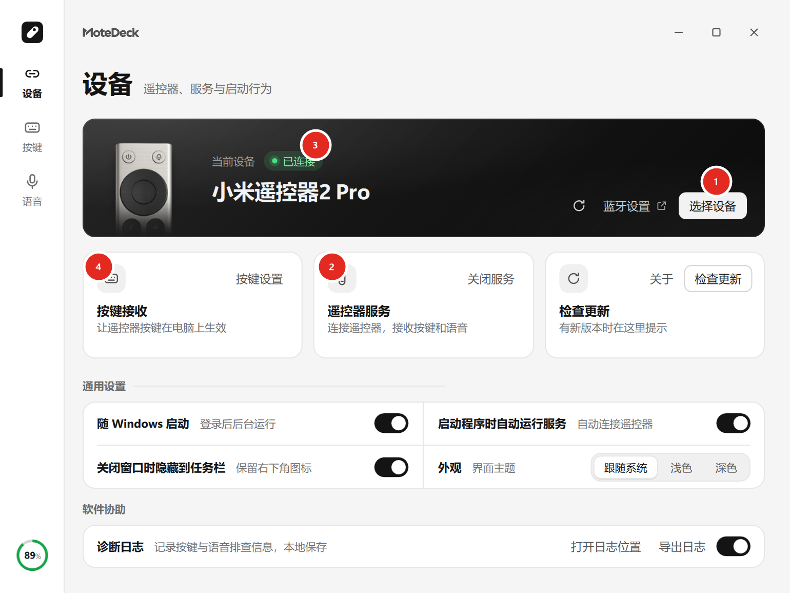

连接遥控器¶
MoteDeck 只接管已经和 Windows 配对过的遥控器，不会自己去配对。
1. 先配对¶
打开 Windows「设置 → 蓝牙和设备」，让遥控器进入配对状态并完成配对。
小米遥控器 2 Pro 可同时长按「主页键 + 菜单键」进入配对状态。
2. 在 MoteDeck 里选设备¶
- 打开「设备」页，点「选择设备」。
- 在列表里选中刚配对的遥控器，点「使用此设备」。
- 点「启动服务」，按页面提示处理黄色或红色状态。
- 状态显示「已连接」后，按一次方向键或确定键确认按键可用。
软件会记住选中的那一只遥控器。同一间屋子里有多只同类设备时，需要你明确选择，程序不会自行猜测。

图中标号：① 选择设备 ② 遥控器服务（启动／关闭） ③ 连接状态 ④ 按键接收
状态怎么看¶
- 已连接：服务已经连上遥控器，按键与语音都可以用了。
- 点击「重新检查」：启动时那次蓝牙探测没有成功。先按一次遥控器按键试试；确实没反应再点重新检查。
- 正在确认：程序正在向系统确认这只设备，等几秒即可。
- 黄色／红色项目：按提示逐项处理。常见的是「按键接收」需要一次管理员授权，或提示需要重启 Windows。
若服务在运行中掉线，设备页会给出「立即重连」或「重新连接」入口，点一次即可，不必反复启动多个程序。
切换设备¶
在「选择设备」里换另一只遥控器时，程序会先停止当前的按键转发和录音，再连接新设备， 不会出现两只遥控器同时抢按键的情况。
遥控器自己能做什么¶
- 按键全部经蓝牙按键通知送到电脑，不需要红外接收头。
- 语音只有一种用法：按住实体话筒键说话才送出声音。把「语音1／语音2」放到其它按键上， 按下时只会发出开始控制的信号、没有音频，所以真正能传声的仍是话筒键。
按键接收需要授权时¶
自定义映射依赖一个本机权限助手，首次启用时程序会弹出一次 UAC。
- 确认授权后，自定义映射立即生效。
- 取消后普通方向和音量键仍可用，但自定义映射不会生效；可以回到「设备」页重新启用或修复。
- 该助手要求当前登录账号本身属于管理员组。
普通方向键有反应、自定义映射没反应
先看「设备」页的「按键接收」状态，按页面入口修复并确认 UAC 即可，详见常见问题。